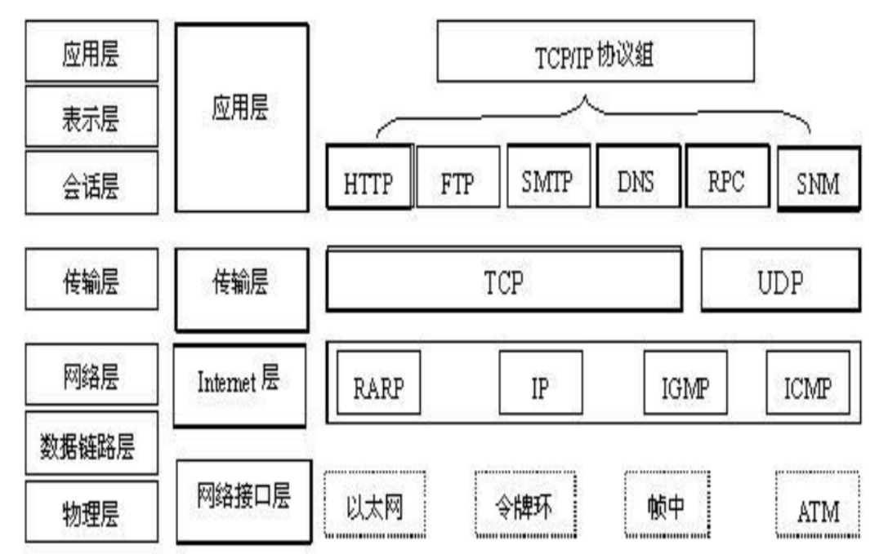
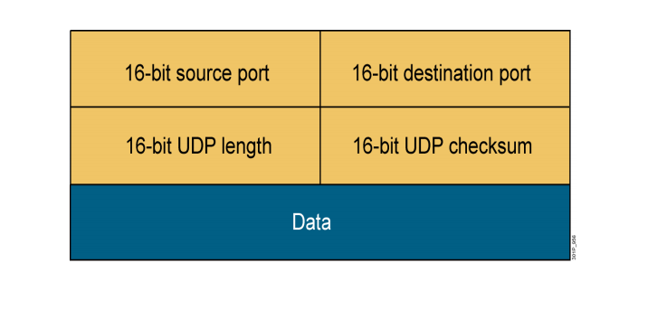

在前面的网络基础内容中我们了解了TCP/IP协议的定义以及TCP/IP模型的分层结构即：
应用层，传输层，Internet层以及网络访问层。
今天我来带大家详细了解下TCP/IP协议栈中的典型协议：
传输层的TCP、UDP协议，网络层的IP协议。

一、TCP协议
TCP是面向连接的通信协议，通过三次握手建立连接，通讯完成时要拆除连接，由于TCP是面向连
接的，所有只能用于端到端的通讯。
TCP协议的工作特性：
工作在传输层
面向连接协议：先协商确保网络状态正常稳定
全双工协议
半关闭：支持一端关闭，一端传输的半关闭状态
错误检查
将数据打包成段，排序
确认机制：保证数据包可靠
数据恢复，重传
流量控制，滑动窗口
拥塞控制，慢启动和拥塞避免算法
TCP协议报文格式：
为何TCP协议具有上述工作特性呢，这就要结合TCP报文格式来讲起。
下图是TCP报文格式图：
具体含义如下：
1.源端口、目标端口：计算机上的进程要和其他进程通信需要通过计算机端口，而一个计算机端口
某个时刻只能被一个进程占用，所以通过指定源端口和目标端口，就可以制度哪两个进程通信。
2.序列号：seq序号，占32位，用来标识从TCP源端口向目的端口发送的字节流，发起方发送数据时
对此进行标记。
3.确认序号：ack序号，占32位，只有ACK标志位为1时，确认序号字段才有效，ack=seq+1
4.数据偏移：表示TCP报文段的首部长度，共4位，由于TCP首部包含一个长度可变的选项部
分，需要指定这个TCP报文段到底有多长。它指出 TCP 报文段的数据起始处距离 TCP 报文
段的起始处有多远。该字段的单位是32位(即4个字节为计算单位），4位二进制最大表示
15，所以数据偏移也就是TCP首部最大60字节。
5.标志位：共6个，URG、ACK、PSH、RSH、SYN、FIN，具体含义如下：
（1）URG：紧急指针位，0表示无效，1表示有效
（2）ACK：确认序号有效
（3）PSH：收到数据包后是否直接传给应用程序使用，或传到buffer
（4）RST：重置位，0表示正常，1表示异常需要重传
（5）SYN：同步位，代表发起一个新连接
（6）FIN：代表释放一个连接
6.窗口大小：表示现在允许对方发送的数据量，从本报文段的确认号开始允许对方发送数据量
7.校验和：提供额外的可靠性
8.紧急指针：标记紧急数据在数据字段的位置
9.选项部分：其最大长度可根据TCP首部长度进行推算。TCP首部长度用4位标识，选项部分最长
为：（2^4-1）*4-20=40字节
TCP协议端口号：
传输层通过port号，确认应用层协议
tcp：传输控制协议，面向连接的协议；通信前需要建立虚拟链路；结束后拆除链路
port number：0-65535
其中：
0-1023：系统端口或特权端口（仅管理员可用），总所周知，永久的分配给固定的系统应用使用；
如：22/tcp（ssh），80/tcp（http），443/tcp（https）等
1024-49151：用户端口或注册端口，要求并不严格，分配给程序注册为某应用使用；
如：1433/tcp（SqlServer），1521/tcp（oracle）
3306/tcp（mysql），11211/tcp/udp（memcached）
49152-65535：动态端口或私有端口，客户端程序随机使用的端口；
其范围的定义：/proc/sys/net/ipv4/iplocalportrange
二、TCP协议三次握手及四次挥手
TCP协议三次握手：
所谓的三次握手即建立TCP连接，是指建立一个TCP连接时，需要客户端和服务端总共发送3个包以
确认连接的建立。
整个流程如下图所示：
第一次握手：客户端将标志位SYN置为1，随机产生一个序列值seq=x，并将该数据包发送给服务器，
客户端进入SYN_SENT状态，等待Server确认。
第二次握手：服务器收到数据包后由标志位SYN=1指定客户端请求建立连接，服务器端将标志位SYN
和ACK都置为1，ack=x+1，随机产生一个序列值seq=y，并将该数据包发送给客户端以确认连接请求，
此时，服务器进入SYN_RCVD状态。
第三次握手：客户端收到确认后，检查ack是否为x+1，ACK是否为1，如果正确则将标志位ACK置为1，
ack=y+1，发送数据包给服务器端，客户端进入ESTABLISHED状态；服务器端收到对端发来的确认数据
包后也转入ESTABLISHED状态，此时三次握手完成，客户端与服务器已建立通讯连接。
SYN攻击
在三次握手过程中，服务器发送SYN-ACK之后，收到客户端的ACK之前的TCP连接称为半连接，此时服务
器处于SYN_RCVD状态，当收到ACK后，服务器转入ESTABLISHED状态。SYN攻击就是Client在短时间
内伪造大量不存在的IP地址，并向Server不断地发送SYN包，Server回复确认包，并等待Client的确认，
由于源地址是不存在的，因此，Server需要不断重发直至超时，这些伪造的SYN包将长时间占用未连接
队列，导致正常的SYN请求因为队列满而被丢弃，从而引起网络堵塞甚至系统瘫痪。SYN攻击时一种典
型的DDOS攻击，检测SYN攻击的方式非常简单，即当Server上有大量半连接状态且源IP地址是随机的，
则可以断定遭到SYN攻击了，使用如下命令可以让之现形：
#netstat -nap | grep SYN_RECV
TCP协议四次挥手：
所谓四次挥手即终止TCP连接，就是指断开一个TCP连接时，需要客户端和服务器端总共发送4个包以确认
连接的端开。
整个流程如下图所示：
由于TCP连接是全双工工作，因此，每个方向都必须要单独进行关闭。即当一方完成数据发送任务后，
发送一个FIN来终止这一方向的连接，收到一个FIN只是代表这一方向上没有数据流动了，即不再接收到
数据，但在这个TCP连接上仍然能够发送数据，直到这一方向也发送了FIN。
第一次挥手：客户端发送一个FIN，用来关闭客户端到服务器端的数据传送，客户端进入FIN_WAIT_1
状态。
第二次挥手：服务器端收到FIN后，发送一个ACK给客户端，确认序号+1，服务器进入CLOSE_WAIT状态。
第三次挥手：服务器端发送一个FIN，用来关闭服务器到客户端的数据传送，服务器进入LAST_WAIT状态。
第四次挥手：客户端收到FIN后，进入TIME_WAIT状态，在等待2个报文最大生产时限后会转入
CLOSED状态，客户端发送ACK确认，服务器收到ACK确认报文后由LAST_ACK状态转为CLOSED状态。
此时四次挥手完成。
三、UDP协议
UDP是非面向连接的通讯协议，UDP数据包括目的端口号和源端口号信箱，由于通讯不需要连接，所有可
以实现广播发送。
UDP与TCP位于同一层，但它不管数据包的顺序、错误或重发。因此，UDP不被应用于那些使用面向连
接的服务，UDP主要用于那些面向查询—应答的服务，例如NFS。相对于FTP或Telnet，这些服务需
要交换的信息量较小。使用UDP的服务包括NTP（网络时间协议）和DNS（DNS也使用TCP）。
UDP通讯时不需要接收方确认，属于不可靠的传输，可能会出现丢包现象。
UDP协议的工作特性：
工作在传输层
提供不可靠的网络访问
非面向连接协议
有限的错误检查
传输性能高
无数据恢复特性
UDP协议报文格式：

16-bit source port：占16位，源端口
16-bit destination port：占16位，目的端口
16-bit UDP length：占16位，定义数据报长度
16-bit UDP checksum：占16位，校验和
通过UDP协议报文格式，我们可以发现，欺骗UDP包比欺骗TCP包更容易，因为UDP没有建立初始化连
接（也可以称为握手），也就是说，与UDP相关的服务面临着更大的危险。
四、IP协议
IP协议（Internet Protocol）是将多个包交换网络连接起来，它在源地址和目的地址之间传送一种
称之为数据包的东西，它还提供对数据大小的重新组装功能，以适应不同网络对包大小的要求。
IP协议的工作特性：
运行于 OSI 网络层
面向无连接的协议
独立处理数据包
分层编址
尽力而为传输
无数据恢复功能
IP协议报头格式：
如下图所示：
版本：占4位，指IP协议版本，目前IP协议版本号为4，即IPv4。
首部长度：占4位，定义了IP首部长度最大值是60字节。
区分服务：占8位，用来获取更好的服务，一般情况下不使用。
总长度：占16位，指首部和数据之和的长度，单位为字节，因此数据包的最大长度为65535字节。总
长度不可超过最大传送单元MTU。
标识：占16位，它是一个计数器，每发送一个报文，该值会加1，也用于数据包分片，在同一个包的若干
分片中，该值相同。
标志（flag）：占3位，目前只有后两位有意义。
（1）DF：Don’t Fragment，中间的一位，只有DF=0时才允许数据包分片。
（2）MF：More Fragment，最高位，MF=1表示后面还有分片。MF=0表示这是数据包最后一个分
片。
片偏移：占12位，值较长的分组在分片后，该分片在原分组中的相对位置，片偏移以8个字节为偏移单
位。
生存时间：占8位，TTL（Time To Live），数据包在网络中可通过的路由器数最大值。
协议：占8位，指出该数据包携带的数据使用何种协议，以便目的主机的IP层将数据不符上交给哪个处理
进程。其中：1表示为 ICMP 协议, 2表示为 IGMP 协议, 6表示为TCP 协议, 17表示为 UDP 协议。
首部校验和：占16位，只检验数据包的首部不检验数据不符。采用简单计算的方法。
源地址和目的地址：各占4字节，分别记录源IP地址和目的IP地址。
五、IP地址：
IP地址用来唯一标识IP网络中的每台设备
每台主机（计算机、网络设备、外围设备）必须具有唯一的地址
IP地址由两部分组成：
网络ID：
标识网络
每个网段分配一个网络ID
主机ID：
标识单个主机
由组织分配给各设备
IP地址分类：
A类地址
0XXXXXXX.XXXXXXXX.XXXXXXXX.XXXXXXXX
8位网络ID，24位主机ID
0-127.x.x.x
主机数：1600万左右
网段数：2^7-2=126
抛去特殊0开头127开头（本地回环）
1-126.x.x.x 共有126个A类可用网段
B类地址
10XXXXXX.XXXXXXXX.XXXXXXXX.XXXXXXXX
16位网络ID，16位主机ID
128-191.x.x.x 开头
主机数：65534
网段数：2^14=16384
C类地址
110XXXXX.XXXXXXXX.XXXXXXXX.XXXXXXXX
24位网络ID，8位主机ID
192-223.x.x.x 开头
主机数：2^8-2=254
D类地址
1110XXXX.XXXXXXXX.XXXXXXXX.XXXXXXXX
224-239.x.x.x 开头
E类地址（保留）
11110XXX.XXXXXXXX.XXXXXXXX.XXXXXXXX
239-255.x.x.x 开头
特殊地址
0.0.0.0
表示一个集合：所有不清楚的主机和目的网络
255.255.255.255
广播地址。对本机来说，这个地址指本网段内（同一广播域）所有主机
127.0.0.1—127.255.255.254
本机回环地址，主要用于测试。
224.0.0.0到239.255.255.255
组播地址，224.0.01特指所有主机，224.0.0.2特指所有路由器。
169.254.x.x
公有IP地址：
A：1.0.0.0 到 9.255.255.255
11.0.0.0 到 126.255.255.255
B：128.0.0.0 到 172.15.255.255
172.32.0.0 到 191.255.255.255
C：192.0.0.0 到 192.167.255.255
192.169.0.0 到 223.255.255.255
私有IP地址：局域网用
A：10.0.0.0 到 10.255.255.255
B：172.16.0.0 到 172.31.255.255
C：192.168.0.0 到 192.168.255.255
子网掩码
子网掩码(subnet mask)又叫网络掩码、地址掩码、子网络遮罩，它是一种用来指明一个IP地址的哪些位标
识的是主机所在的子网，以及哪些位标识的是主机的位掩码。子网掩码不能单独存在，它必须结合IP地址
一起使用。子网掩码只有一个作用，就是将某个IP地址划分成网络地址和主机地址两部分。
传统表示法：
XXXXXXXX.XXXXXXXX.XXXXXXXX.XXXXXXXX
00000000 0
10000000 128
11000000 192
11100000 224
11110000 240
11111000 248
11111100 252
11111110 254
11111111 255
CIDR表示法：
IP/网络ID位数
如192.168.10.132/30